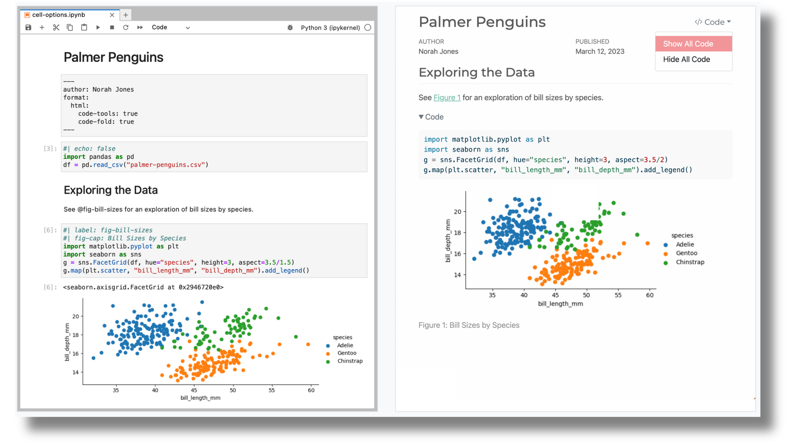
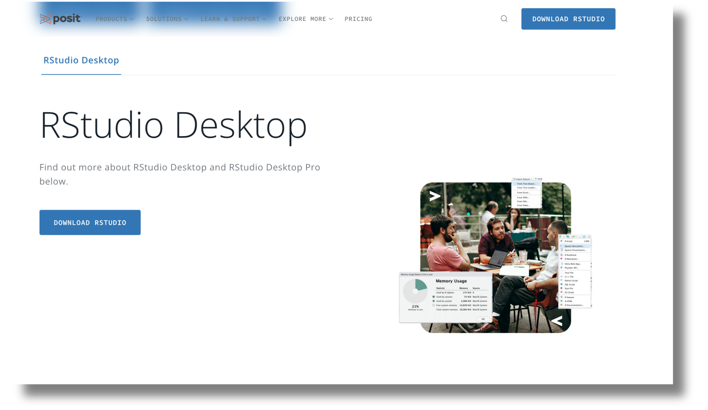
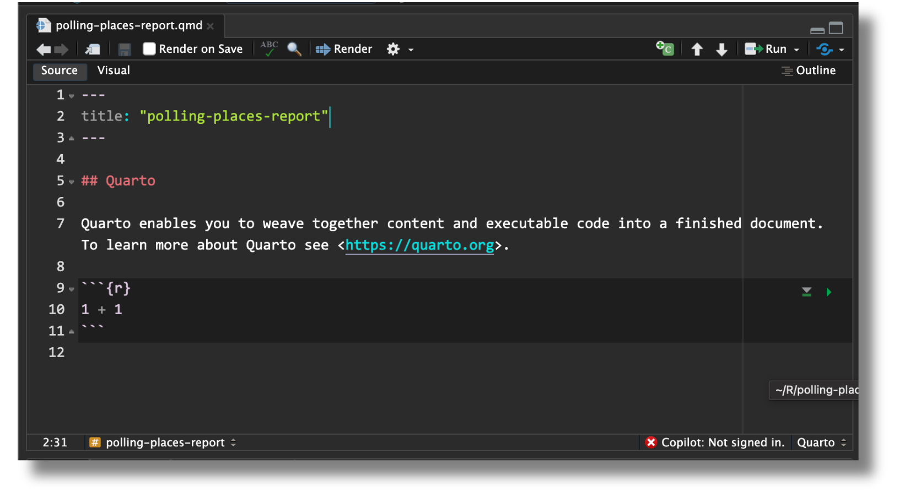
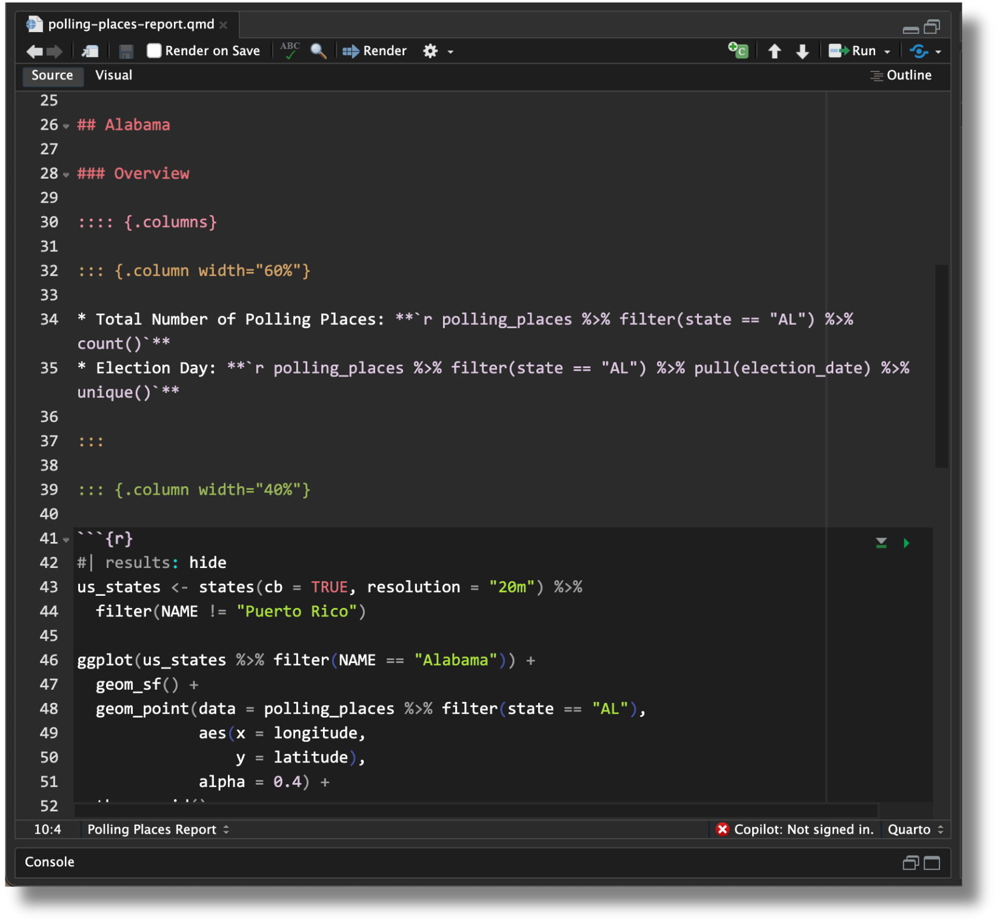
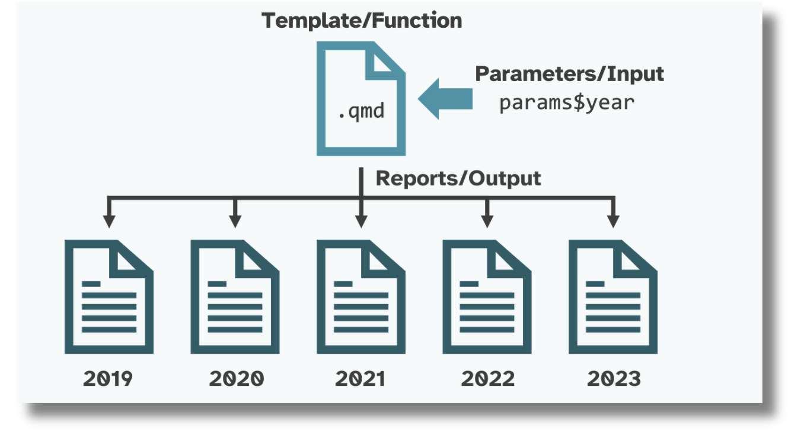

Getting started with report writing using Quarto
Introduction

Overview
Getting started with report writing using Quarto
Overview
What is Quarto?
Getting started with Quarto
Creating your Quarto report
Iterating your reports
Styling your reports
Thank you!
Workshop materials
- Slides: https://ivelasq.quarto.pub/getting-started-with-report-writing-using-quarto/
- GitHub repo with instructions: https://github.com/ivelasq/2022-10-27_intro-to-quarto
- posit.cloud Project: https://rstudio.cloud/content/4823293
Workshop prep
To follow along with the exercises, please be sure that you:
- Are on RStudio v2023.06 or later and have cloned the exercise repo
- Or, have a posit.cloud account and can access the project
Native base R pipe |>
- Introduced in R 4.1.0
- Similar to the magrittr pipe
What is Quarto?
Getting started with report writing using Quarto
Overview
What is Quarto?
Getting started with Quarto
Creating your Quarto report
Iterating your reports
Styling your reports
Thank you!
What is Quarto?
Quarto® is an
open-source
scientific and technical
publishing system
built on Pandoc.
What is Quarto?
Quarto origins
- Open source project sponsored by Posit (formerly RStudio)
- We’ve had 10 years of experience with knitr/R Markdown
- But there are a lot of other programming languages…
Can we reimplement R Markdown such that it’s not tied to R?
Quarto goals
- Create computational documents that hold source code for automation and reproducibility
- Reduce how difficult it is to make a scientific document
- Enable “single-source publishing” — create Word, PDFs, HTML, etc. from one source
Quarto formats
Quarto can create various types of documents, including:
- Websites
- Books
- Blogs
- Presentations
- and, of course, reports!
Why Quarto?
- Automation: Update your report and/or code output
- Reproducibility: Document your process and make it easy to reproduce and replicate your work
- Flexibility: Add multiple data sources, create figures, tables, diagrams, etc.
- Single-source publishing: Ability to create HTML, PDF, Word versions from a single source
Why Quarto over R Markdown?
Ultimately, it’s up to you!
- R Markdown will continue to be maintained, but Quarto will receive large future updates
- If you use Python or Julia, you can use the same tool without depending on R. And other engines can be added in the future!
- Quarto provides a unified ecosystem with shared expression for core features
- Quarto also has extensions for customizing your documents
Getting started with Quarto
Getting started with report writing using Quarto
Overview
What is Quarto?
Getting started with Quarto
Creating your Quarto report
Iterating your reports
Styling your reports
Thank you!
Installing RStudio
You can use Quarto in RStudio, VS Code, Jupyter, Neovim, and other text editors.
Today, we will use RStudio, which comes bundled with Quarto.
Creating a new Quarto document
Create a new Quarto document by going to File > New File > Quarto Document.
- Notice the
.qmdextension of the Quarto document
Creating a new Quarto document
This is what the default Quarto document looks like:
YAML header
- Metadata of your document
- Demarcated by three dashes (—) on either end
- Uses key-value pairs in the format
key: value
YAML intelligence
- YAML intelligence is available for project files, YAML front matter, and executable cell options
Markdown text
- Markdown is a lightweight language for creating formatted text
- Quarto is based on Pandoc and uses its variation of markdown as its underlying document syntax
Executable code
- Code chunks begin and end with three backticks (usually)
- Code chunks are identified with a programming language in between
{} - Can include optional chunk options, in YAML style, identified by
#|at the beginning of the line
Two editors: source and visual
- RStudio includes a visual editor for Quarto markdown, including support for tables, citations, cross-references, footnotes, and more:
Creating a new Quarto document
Use the Render button to preview documents as you edit them.
- Check off Render on Save to automatically render whenever you save
Let’s see it in RStudio!
Creating your Quarto report
Getting started with report writing using Quarto
Overview
What is Quarto?
Getting started with Quarto
Creating your Quarto report
Iterating your reports
Styling your reports
Thank you!
Edit the YAML header
- Include metadata such as author, subtitle, date as well as customization options like theme, font color, fig-width, etc.
- Here, we edit the title, author, publishing date, format, and code chunk options
Add a setup chunk
- We can add chunk options on a per code-block basis by using
#| - In this setup chunk, we can load all the packages that we need and the dataset that we will be using
Create a template report
Next, we can create a template of what we’d like the report to look like by adding:
- Text and text formatting
- Headings
- Lists
- Figures
- Tables
- Columns
- Cross-references
- Captions

Add figure with captions and labels
- Use the chunk option
#| fig-cap:to add a caption to a figure or table - Add
#| label: fig-to create cross-references
```{r}
#| label: "fig-state-map"
#| fig-cap: "Polling locations in the state"
#| results: hide
us_states <- states(cb = TRUE, resolution = "20m") |>
filter(NAME != "Puerto Rico")
ggplot(us_states |> filter(NAME == "Alabama")) +
geom_sf() +
geom_point(data = polling_places |> filter(state == "Alabama"),
aes(x = longitude,
y = latitude),
alpha = 0.4) +
theme_void()
```- Reference the figure in other locations using
\@fig-label.
Add inline code
- Add inline code (within Markdown) using
`r` - When the document is rendered, the expression in the back-ticks will be executed
Manual:
* Total number of counties: **65**
* Total number of polling places: **2075**
* Election Day: **2020-11-03**Inline code:
* Total number of counties: **`{{r}} polling_places |> filter(state == "Alabama") |> distinct(county_name) |> count()`**
* Total number of polling places: **`{{r}} polling_places |> filter(state == "Alabama") |> count()`**
* Election Day: **`{{r}} polling_places |> filter(state == "Alabama") |> pull(election_date) |> unique()`**Add footnotes
- Add a footnote by using
[^1]within the text, and[^1]: Here is the footnote.to write out the footnote.
In this report, we present a detailed overview of polling places in various counties across the United States, providing information on the total number of polling places and showcasing example locations for each county on election day.[^1]
[^1]: Data from https://github.com/rfordatascience/tidytuesdayLet’s see it in RStudio!
Iterating your reports
Getting started with report writing using Quarto
Overview
What is Quarto?
Getting started with Quarto
Creating your Quarto report
Iterating your reports
Styling your reports
Thank you!
Notice how much we’d have to repeat for each report
- Manually creating tables for every county - 1881 counties!
- Manually creating report for every state in the country - 50 states!

Let’s automate the county tables using knitr::knit_child()
knitr::knit_child()allows you to break your content into smaller, modular pieces- It involves having a “child” document as a template and running it repeatedly with different parameters
- The “main” document “knits” or includes the output from the child document
Set up the “main” document
```{r}
#| results: hide
counties <- polling_places |> filter(state == "Alabama") |> distinct(county_name) |> pull()
expanded_child <- lapply(counties,
function(xx)
knitr::knit_expand("../_template.qmd", current_title = xx))
parsed_child <- knitr::knit_child(text = unlist(expanded_child))
```
`{{r}} parsed_child`Set up the “child” document
In another file called _template.qmd:
### {{current_title}} COUNTY
* Total Polling Places: `{{r}} polling_places |> filter(state == params$state, county_name == "{{current_title}}") |> count()`
* Example Locations:
```{r}
polling_places |>
filter(state == params$state,
county_name == "{{current_title}}") |>
head(6) |>
select(name, address.x) |>
kbl(format = "markdown")Let’s see it in RStudio!
Let’s automate the state reports using parameters
- Parameters refer to variables or values that you can set at the beginning of your document or in the YAML header
- These parameters can be used to specifying values that are used throughout the document
Let’s automate the state reports using parameters
- Using parameters means that we can create copies of the same report for different values by just changing the parameter in the YAML

Edit the YAML header
- Use
paramsin the key:value pair
Replace hard-coded variables with the params variable
- Adding parameters in the YAML require the
{meta}syntax to reference things in the document metadata
Replace hard-coded variables with the params variable
- Within the document, use the
params$statenotation
```{r}
ggplot(us_states |> filter(NAME == params$state)) +
geom_sf() +
geom_point(data = polling_places |> filter(state == params$state),
aes(x = longitude,
y = latitude),
alpha = 0.4) +
theme_void()
```Note
This includes our inline code and child _template.qmd document!
Edit params in the YAML to rerender the report for different states
Render the parameterized document
- Render button in RStudio
- Quarto CLI:
quarto render polling-places-report.qmd -P state:'California' - The quarto R package:
quarto::quarto_render()
Let’s see it in RStudio!
Render all 50 reports
Option 1:
- Change the
paramsfor each state and render the document - Render the report 3 Change the file name to match the parameter
- Repeat 50 times
Render all 50 reports
One HTML report for each state.
Option 2:
- Create a dataframe with columns that match
quarto::quarto_render()
output_format: file type (html, revealjs, pdf, docx, etc.)output_file: file name with extensionexecute_params: named list of parameters
- Map over each row:
purrr::pwalk(dataframe, quarto_render, quarto_render_args)
Create the dataframe to iterate over
Subset and create quarto_render() parameters
Map over each row
Let’s see it in RStudio!
Note
Jadey Ryan is holding a workshop on parameterized report generation using Quarto with R-Ladies Abuja on February 21st!
Styling your reports
Getting started with report writing using Quarto
Overview
What is Quarto?
Getting started with Quarto
Creating your Quarto report
Iterating your reports
Styling your reports
Thank you!
Add a Bootswatch theme
- Quarto includes 25 themes from the Bootswatch project
- In the YAML, add an included theme using
themeunderhtml
Let’s see it in RStudio!
Use extensions
- Extensions are a powerful way to modify and extend Quarto
- The Awesome Quarto GitHub repo has an extensive list of available extensions
- For example, install and use the
sketchy quartoextension
Let’s see it in RStudio!
Use custom themes
- Add an
.cssor.scss(Syntactically Awesome Style Sheets) file to your project - Include it in the YAML to use in your report
/*-- scss:defaults --*/
@import url('https://fonts.googleapis.com/css2?family=Fraunces:opsz@9..144&family=Gilda+Display&display=swap');
$font-family-sans-serif: "Fraunces", sans-serif;
$presentation-heading-color: #446571;
$code-block-font-size: 0.6em;
$code-color: #5f5f5f;
$presentation-h2-font-size: 1.4em;
$link-color: #446571 !default;Add a title banner
- Include a formatted title block at the start of the report
- Add to the YAML using
title-block-banner
Let’s see it in RStudio!
Thank you!
Getting started with report writing using Quarto
Overview
What is Quarto?
Getting started with Quarto
Creating your Quarto report
Iterating your reports
Styling your reports
Thank you!
Thank you!
I hope that you enjoyed getting started with reporting using Quarto! Keep in touch!
Q&A
https://github.com/ivelasq/getting-started-with-report-writing-using-quarto